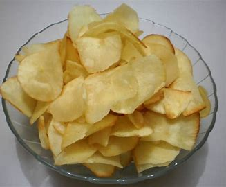
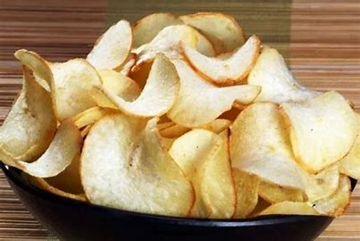
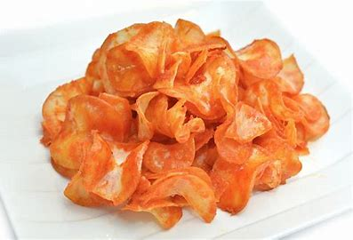

Profil Bisnis
"Kripiqu Singkong" adalah produsen keripik singkong yang berkualitas tinggi dengan fokus pada memberikan pengalaman rasa yang memuaskan kepada pelanggan kami. Kami menggabungkan inovasi dengan tradisi dalam setiap langkah produksi untuk menciptakan keripik singkong yang nikmat dan bermutu. Dengan komitmen terhadap kualitas dan rasa, kami bangga menyajikan produk yang mendefinisikan kenikmatan sejati dalam setiap gigitan. Kami menawarkan berbagai macam rasa keripik singkong, mulai dari yang klasik hingga yang unik. Setiap varian produk kami menghadirkan sentuhan kreatif dan rasa yang autentik. Dari rasa gurih, pedas, dan original. Hingga kombinasi rasa yang menggoda, kami yakin setiap pelanggan akan menemukan favorit mereka di antara koleksi kami.
Produk Yang Kita Tawarkan:
-
Kripiqu Gurih
Keripik singkong gurih dengan cita rasa yang nikmat dan ringan. Ideal sebagai camilan keluarga.
-
Kripiqu Asin
Keripik singkong asin dengan rasa yang segar dan kriuk-kriuk. Sangat cocok untuk dijadikan camilan saat bersantai.
-
Kripiqu Pedas
Keripik singkong pedas dengan cita rasa yang membuat ketagihan. Sangat cocok untuk dijadikan camilan saat bersantai.
Cara Transaksi
Anda dapat melakukan transaksi dengan mudah dan cepat melalui beberapa cara:
- Transfer melalui bank
- Transfer melalui e-wallet
- Bayar di tempat saat penjualan
Silakan hubungi kami melalui saluran komunikasi yang tersedia untuk mendapatkan informasi lebih lanjut.
Saluran Komunikasi
- Email: @kripiqusingkong@gmail.com
- Telepon: 087848696751
- Instagram: Ikuti saya di Instagram!
- Facebook: Ikuti saya di Facebook juga ya!
- Alamat: Batujajar, Bandung, Indonesia.